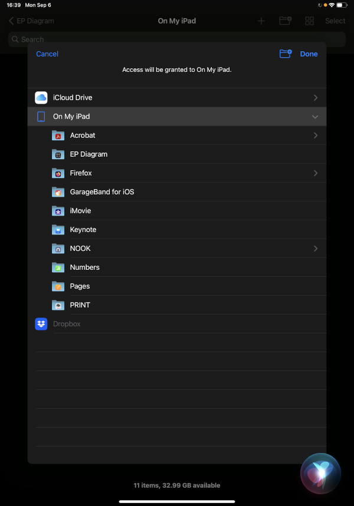
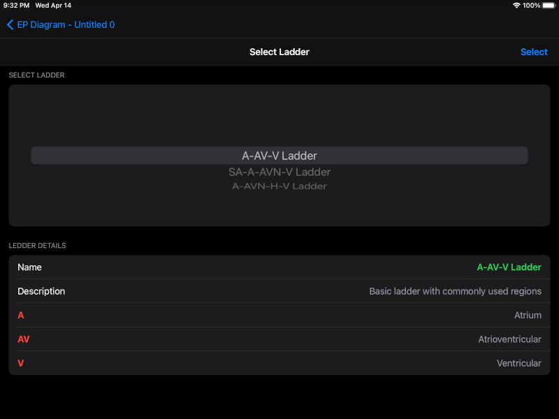

Table of Contents
- Overview
- Quick start
- EP Diagram manual
- Known issues/bugs/limitations
- References
- Acknowledgments
Overview
Figure 1: Early ladder diagram (Sir Thomas Lewis, 1920)
- EP Diagram creates ladder diagrams, a classic form of ECG analysis that depicts the path of the cardiac impulse through anatomic regions of the heart. Ladder diagrams are useful to understand cardiac arrhythmias such as heart block, reentrant tachycardias, and premature complexes. They also can be used to draw the timing intervals, blanking periods, and refractory periods used by electronic pacemakers. Traditionally ladder diagrams are roughly sketched on paper, but with EP Diagram you can draw them on your iPad, and, unlike a paper sketch, these diagrams can scroll and zoom, can measure intervals and conduction times automatically, and can be saved as publication quality images.
- EP Diagram has a lot of built-in features that simplify the creation of ladder diagrams, and these features are described in this help manual. The next section, Quick start, contains some tips on how to get started. However a good way to learn the program is to create some sample ladder diagrams, then use your finger to tap, double-tap, and drag on the ladder to see what happens. Try out the various buttons. Experiment! Most of the functions are intuitive, and if you want more in-depth instruction, have a look at the rest of this help manual.
Quick start
Files screen
- On the opening files screen, tap Create New Diagram to create a blank ladder diagram.
Load an ECG image
- Use the "hamburger" menu icon at the top left to open the side menu. You can select an ECG image from your photos or files and it will appear on the top half of the screen.
Create marks
- Tap on the image or the ladder grid to create marks, which are the lines that are drawn on the ladder. Use the cursor (the vertical line extending from the mark to the top of the screen) to align marks with the ECG waveforms. Tap away from the cursor to hide the cursor. Tap on a mark to bring back the cursor. Each tap on the cursor changes the anchor point of the cursor to the mark, from middle to proximal to distal.
- Double tap on a mark to delete it. Double tap anywhere else to create a mark. Double tapping is a fast way to create marks.
- Marks appear in the active region, shown by a tinted background. If you tap on a different region the marks will appear in that region which will become the new active region. Tapping on the label of a region will also activate or deactivate it.
- Dragging with your finger in a region will also create a mark.
Move marks
- Dragging on a mark with a cursor (you can drag either the mark itself or its cursor) will move the mark horizontally.
- The anchor point will determine how the mark moves. A middle anchor will move the whole mark, but an anchor at an endpoint of a mark will just move that endpoint, while the other endpoint stays fixed. This will slant the mark.
- Long press on the cursor to change it to an omnidirectional cursor (it has a large circle on it), allowing marks to move in any direction. Long press again to change it back.
- Marks that are placed end to end will automatically link up and move together the next time you move one of them.
Calibrate the diagram
- Tap the Calibrate button to show a caliper that can be used to calibrate the diagram to a standard interval of 1000 msec.
- After calibration, measurements will appear on the diagram.
Connect marks
- You can draw and move marks to connect them, but it is easier to use the Connect button.
- After tapping the Connect button, tap pairs of marks separated by a region to connect the marks with a new mark.
- Tap from a mark to an adjacent region to draw a mark that blocks in that region.
Edit the diagram
- Tap the Edit button to fine-tune your diagram.
- Tap to select and deselect marks or regions, or drag to select zones.
- Long press the ladder after selecting marks or regions to show a menu that can be used to customize the appearance of the marks, including their style, emphasis, block, impulse origin, etc. You can also add groups of marks and even periods of regular rhythm or fibrillation to zones and regions using this menu. This menu also allows you to add periods to your diagram.
Undo/Redo
- Practically anything you do can be undone or redone and these changes are automatically saved.
Other features are located on the side menu
- Change to a different ladder
- Edit or create ladders
- Load sample diagrams
- Lock the image or ladder into a fixed position
Take screenshots
- Take screenshots using the Screenshot button at the upper right of the screen, next to the Close button.
Preferences
- Change the overall appearance or behavior of the app. Many aspects are customizable.
Close the diagram
Use the Close button at the upper right of the screen to close the diagram and return to the files screen. Diagrams are automatically saved as you work with them.
Those are the basics
If you want more detail, read the next section, which is a detailed manual for the app.
EP Diagram manual
Introduction
Ladder diagrams date back at least a century and have been used to analyze arrhythmias and as teaching tools for almost as long as there has been electrocardiography. For a history and examples of ladder diagrams, see the references. EP Diagram is a full-featured, interactive ladder drawing program. It allows you not only to draw ladders, but also to customize their appearance to a fine degree. As such it is a complex program and it can take a while to learn all its features. However, it has an extensive undo/redo facility, so feel free to experiment.
EP Diagram is optimized for use on an iPad. It can be used on a phone, but due to the small size of a phone, it may be more difficult to draw ladder diagrams.
Don't panic! (Undo, Redo, and Autosave)
Practically any change you make while using this app can be reversed by tapping the Undo button at the bottom of the screen. If you change your mind you can revert the undo action by tapping the Redo button. Every change you make is automatically saved. There is no need to explicity save your diagram files; the app does this in the background.
Terminology
Ladder diagram terminology is not standardized. Here is a glossary of the terms used in this manual.
| Term | Definition |
|---|---|
| Diagram | a file containing an image and a ladder |
| Ladder | a graphical representation of electrical conduction |
| Region | an anatomic area of the heart, e.g. atrium or ventricle |
| Zone | a subset of a region |
| Label | the area to the left of a region containing its name, e.g. A or V |
| Mark | the lines in each region representing conduction |
| Cursor | a line connected to a mark used to move and align the mark |
| Anchor | the point on the mark where movement occurs |
| Link | a connection between marks causing them to move together |
| Impulse origin | where conduction starts, indicated by a symbol |
| Block | where conduction blocks, indicated by a symbol |
| Interval | time in msec between adjacent marks |
| Conduction time | time in msec between earliest and latest points of a mark |
| Caliper | used to calibrate the diagram to allow measurements |
| Conduction direction | optional arrow symbol indicating direction of electrical flow |
| Markers | optional lines on image aligned with marks |
| Mark pattern | a grouping of marks that form a repeating pattern |
| Joining mark | mark used to join together mark patterns |
| Period | time period, such as a refractory period |
Diagrams
Creating and opening diagrams
EP Diagram is a file based app, meaning the diagrams you create are stored on your device or on iCloud, and can be processed by the Files app on your device, meaning you can copy them, rename them, or delete them outside of the EP Diagram app. The diagram files you create have a file extension of diagram and a specific icon and file format. When you open the app, a screen shows your diagram files and a create file icon.

Figure 2: EP Diagram files
Tap Create New Diagram to create a diagram file, or tap on one of your previously created diagrams to open it.
Dealing with the app sandbox
Apps distributed on the Apple App Store are sandboxed, meaning they have access only to the files in the container they run in, which is a private folder assigned to the app. By default they can't read and write files in other file locations. This policy is enforced by Apple to improve security, but it does result in some hoops that need to be jumped through. To add a folder to the app sandbox, you must specifically select that folder using a special file dialog. Once this is done the app will remember that the folder has been added to the sandbox whenever you use the app. In other words, you should only have to do this once for each folder you want to add to the sandbox. Select a folder as in the figure below.

Figure 3: Add folder to sandbox
Initial diagram screen

Figure 4: New diagram
A blank diagram has no ECG image and has a default ladder without marks. You will see how to add an ECG image and markup the ladder in the next sections.
Renaming a diagram
New diagrams have a generic file name. You can rename the diagram in the Files app, or rename it using the side menu and then choosing Rename diagram.
Closing a diagram
There is no need to specifically save changes you make to a diagram. Every change you make is automatically saved. You close a diagram by simply tapping the X at the upper right hand corner of the screen. Note however that undo and redo information is not restored when you close and reopen a diagram. Undo information can also be reset by the operating system if memory resources are low. Thus if you have a diagram that you want to "play around with" but don't want to lose its original form, it might be best to duplicate that diagram using the Files app, and work on a copy.
Images
Adding an image
- Image types
EP Diagram supports most image formats, such as
jpgandpng, and it also can load PDF files. In addition you can take a photo with your device's camera and directly import it into the app. - Selecting images
Open the side menu and tap Take photo to use your camera to create an image, or tap Select image and choose Photos or Files as the image source. If a dialog appears asking for permission to access the camera or your Photos app, go ahead and grant permission. If you don't, you will need to grant this permission in the Settings app of your device in order to import images. After selecting an image, it will appear in the top half of the diagram.

Figure 5: Diagram with image added
Manipulating the image
- Scrolling and zooming
You can pinch to zoom and use your finger to scroll the image. If you have created a ladder, you will see the ladder will zoom and scroll appropriately at the same time. In EP Diagram all zooming and scrolling is done via the image, not via the ladder.
- Rotating the image
If the image is out of kilter (this may happen with photos you take), long press on the image and select the Rotate menu. Use the buttons at the bottom of the screen to rotate the image. Tap Reset to bring the image back to its original orientation.
- Adjust the size of the image versus the ladder
There is a small red horizontal bar between the image and the ladder. Move this up or down to adjust the relative proportions of the image and the ladder on the screen.
PDF files
Load PDF files like any other image file. However, some PDF files contain multiple pages. You can change the page by performing a long press on the image and selecting the PDF menu item. A toolbar will appear at the bottom which allows you to change pages. Note that once a multipage PDF diagram is closed, only the page shown when the diagram is closed will be saved with the diagram. This is because EP Diagram only saves one image at a time. In order to change pages after reopening a diagram based on a multipage PDF file, it will be necessary to reload the PDF file.
Ladders
Default ladder
When you create a new diagram, a default ladder is presented initially. You can change the default ladder, select a different ladder, or create a new ladder from scratch. The default ladder has three regions: A (atrial), AV (atrioventricular), and V (ventricular).
Modes
Most of the time you will be working with the ladder in normal mode. This is the default mode of operation. This mode allows you to add and delete marks, move marks, link marks together, and in general draw your ladder. The toolbar menu at the bottom of the screen in normal mode shows the three other modes: calibrate, connect and edit. Those modes are used to calibrate the diagram to allow measurements to be made, to quickly connect pairs of marks, and to edit the ladder's appearance. These modes will be discussed in detail later.
Active region
In normal mode one of the ladder regions is usually highlighted, as seen in the prior figure. This is the active region. You can change the active region by tapping the label of another region, or toggle the active region on and off by tapping the label of the active region. The active region determines into which region a mark will be drawn. Thus if you are tapping on P waves you would want the A region to be active, and you would have the V region active when tapping on QRS complexes.
Marks
Creating marks
If you tap once on the image, a vertical mark with an attached cursor will be drawn in the active region. If there is no active region, the first region in the ladder will become the active region. If instead of tapping on the image you tap on the ladder, whatever region you tap on will become the active region, and the mark will appear in that region. Once the mark appears with the cursor, if you do a single tap elsewhere, the cursor will disappear. Tap again elsewhere on the image to create another mark. In the figure below we are adding marks in the A region, corresponding to P waves, by tapping on P waves in the image.

Figure 6: Adding marks to the A region
Double tap shortcut for creating and deleting marks
It's a bit tiresome to tap to create a mark, and then tap again just to make the cursor disappear, and then tap a third time to create the next mark. So, to make things easier, you can just double tap at each new location to create a new mark. Here, we first tapped on the label of the V region to make it the active region, and we are double tapping on QRS complexes to make marks in the V region. If a mark is malpositioned, it is very easy to double tap it again to make it disappear.

Figure 7: Adding marks in the V region
Dragging to create marks
As described later, it is easy using connect mode to connect the marks we have drawn, but we'll stay in normal mode for now and accomplish the same feat. Using your finger, drag from the first mark in the A region to the first mark in the V region. A new mark will be created, and when it is close to the other two marks, they will be highlighted in a purple color, meaning they are close enough to the new mark to be linked. When you finish the drag through the AV region and lift your finger, the new mark (if it is close enough) will snap into the correct position, linking the two regions with conduction through the AV region.

Figure 8: Dragging to create a mark in the AV region
Repositioning marks
Nobody's perfect, and it's likely the marks you create will not be perfectly aligned with the image or with each other. It's often necessary to reposition marks you have already created.
In order to move a mark, it must have a cursor attached to it. By default when you first tap a mark it has a cursor anchored to the middle of the mark. Dragging the cursor left or right will keep the mark vertical and move it horizontally. You can move just one endpoint of the mark or the other by changing the anchor point of the mark.
Mark anchors
Once a mark has a cursor, we can change the anchor point by single-tapping on the mark or the cursor. Marks have at most three anchor points, proximal, middle, and distal, though some marks have only two if they are linked to other marks (i.e. their freedom of movement is restricted). When we drag the cursor of the mark, the anchor is what moves.
To demonstrate this, single tap on the highlighted mark or its cursor. The anchor will move from the middle to the proximal end of the mark. Tap again and it will move the to distal end. Finally it will cycle back to the middle if you tap again. In the next figure we see a mark with a proximal anchor in the AV region that has been dragged so it slants.

Figure 9: Proximal anchor
Moving marks in all directions
So far we have used the cursor to move marks purely in a horizontal direction. But we can also move marks in unlimited directions. To do this we have to change our cursor to an omnidirectional cursor.
Tap a mark to cause the cursor to appear. Then do a long press on the cursor. A circle will appear, indicating the cursor is now omnidirectional. You can now drag the mark in any direction, depending on the anchor point. Another long press on the cursor will change it back to a normal horizontally moving cursor.

Figure 10: Omnidirectional cursor
Deleting marks
To delete a mark, simply double tap it. You can delete multiple marks, or all the marks in a region or in the ladder using edit mode, as describe later.
Linked marks
Once marks are linked, moving one linked mark will also move the marks it is linked to. In order to unlink marks, you can use the Undo button, or delete and then re-add a linked mark, or use edit mode.
Block and impulse origin
In the course of adding, deleting, and moving marks, if the app preferences are set to show impulse origin or show block, the app will try to determine automatically where the impulse origin is and where block is, depending on the direction of the marks and their linking, and will show this with symbols as seen below. You can also manually set impulse origin and block using edit mode. You can change the styling and positioning of the impulse origin and block symbols in app preferences.

Figure 11: Impulse origin and block
Calibration and measurements
Calibrating the diagram
While ladder diagrams are nice, even nicer is the ability to use the ladder to make measurements. In order to do this, you must calibrate the diagram. Tap the Calibration button to enter calibration mode. A single caliper will appear on the image. If you use the app EP Calipers this will look familiar. This caliper though is only for setting calibration. It is not for making measurements. Your ladder will do that, once it is calibrated.

Figure 12: Calibration mode
Note that this caliper is always set to a measurement of 1000 msec. In order to calibrate, you must measure a 1000 msec interval with the caliper. Then tap Set to set the calibration, or tap Clear to remove calibration. Once calibrated, you can recalibrate at any time. Tap Done to return to normal mode.
Intervals and conduction times
After calibration, if preferences are set to show intervals and show conduction times, you will now see measurements on the ladder. These will change "on the fly" as you modify the ladder. They will remain accurate even when zooming and scrolling the image, or if you rotate the screen.

Figure 13: Measurements
Connecting marks
Connect mode is useful to connect marks in different regions rapidly. Tap the Connect button to enter this mode. Then tap on pairs of marks, separated by a region of conduction to connect them.
You can also quickly create a blocked mark in connect mode. Tap on a mark in the A region, then tap in the AV region. A new mark will be created with block in the AV region.
Tap the Done button to resume normal mode.
Editing marks
Fine-tuning your diagrams
If you are aiming for publication quality diagrams, it's important that marks all slope the same, that block is always at the same level in a region, and that you can change the appearance of marks, such as having marks with dashed instead of a solid lines. Edit mode is for making these changes. This mode allows you to select one or more marks or to select zones or regions and then apply changes to the selection. Editing multiple marks at once allows them all to assume the same appearance, e.g. have the same slant, level of block, etc.
Making selections in edit mode
Tap the Edit button to enter edit mode. In this mode a single tap on one or more marks will select these marks. A single tap on a region (including the region label) will select the region and all the marks in the region. Dragging on an area of the ladder will select a zone and the marks within the zone. A tap on a selected mark, region, or zone will toggle the selection.
Note that in diagrams with periods, you must tap on the mark the period is attached to, not the period itself.
You can also use the Select All and Clear Selection buttons on the toolbar to quickly select the whole ladder or clear your selection. Once selected, a long press will bring up a context menu. After editing, select Done to return to normal mode.
Figure 14: Context menu in edit mode
Style
Choose between a solid, dashed, or dotted mark line style.
Emphasis
Marks can have a normal or bold emphasis. Bold emphasis thickens the line of the mark.
Impulse origin
Impulse origin is normally automatically determined, but you can override this and place the impulse origin proximally or distally, or have no impulse origin annotated.
Block
Block is normally automatically determined, but you can also override this manually.
Label
You can add or edit a label for individual or groups of marks. Labels can be added to any of three positions: to the left of the mark, above the proximal end of the mark, or below the distal end of the mark. Labels are useful for annotations such as "Slow Pathway" or pacemaker pace/sense events, such as "As" or "Vp".
Straighten marks
Makes selected marks vertical.
Slant marks
Applies a slant to selected marks.
Adjust mark ends
Fine tune where either endpoint of a mark ends in a region.
Move marks
Move the selected marks as a group by dragging them horizontally after selecting this menu option.
Adjust CL
Lengthen or shorten the cycle length of a group of marks. This option forces all the selected marks to have the same cycle length.
Rhythm
If you select a zone or region, and then bring up the context menu with a long press, you can select the Rhythm item to display a screen that allows you to fill the region or zone with a rhythm.

Figure 15: Rhythm selection
You can choose a regular rhythm or fibrillation. With fibrillation you will have a random cycle length defined by an upper and lower limit. You can also randomize parameters such as the impulse origin, conduction time, and conduction direction.
Repeat CL
Repeat the cycle length of a pair of marks forward, backward, or bidirectionally. This is useful in copying a repeating pattern.
Copy and paste
Select marks and then with this menu item tap on the ladder to copy them to the point of the tap. Use Move marks to fine tune the position of the pasted marks if necessary.
Repeat pattern
This option will take a selected group of marks and repeat them, with one mark acting as a joining mark. This allows the repetition of complex patterns. You single tap on the joining mark to duplicate the pattern once. A double tap on the joining mark will duplicate the pattern until the end or begining of the ECG. A picture is worth a lot of description.
Figure 16: Using pattern repeat. The top panel shows before, and the bottom after the repeat. The joining mark is indicated by the the green arrow. A single tap on the joining mark resulted in a duplication of the pattern.
Unlink
Unlink the selected marks.
Snap to nearby marks
Move the endpoints of nearby marks together and link the marks.
Periods
- What are periods?
In addition to showing paths of conduction, ladder diagrams are useful for indicating the state of cardiac tissue, such as the duration of refractoriness after cells are depolarized, or the timing cycles of an electronic pacemaker, such as the lower rate interval. These various time periods are traditionally indicated as rectangular areas on a ladder diagram, as shown below.
Figure 17: VVI pacemaker periods
NB: In order for periods to appear in your diagram, Show periods must be turned on in period preferences, and the diagram must be calibrated.
- Adding/editing periods
Use this screen to add, delete, edit, or reorder the periods for selected marks.

Figure 18: Add/edit periods
Tap the plus button to add a new period. Tap the period in the list to edit it. Swipe left to delete a period. Tap the Edit button to reorder or delete periods. The order of periods in the list is the same order that periods will appear in on the ladder.
- Edit a period
If you tap on a period in the list of periods, the screen below appears.
Figure 19: Edit a period
There are several characteristics of a period that can be changed here.
- Name
Give a name to a periods, such as LRI, pAV, PVARP, VERP, etc.
- Duration
The duration in msec of the period.
- Color
Choose a different color for each type of period to help distinguish the periods on the ladder.
- Resettable
Normally a period will not be affected by other marks that occur during it. An example would be the ventricular blanking period, during which signals on the ventricular channel are ignored. This would be a non-resettable period. An example of a resettable period would be the lower rate interval of a pacemaker, where the interval is reset every time there is a sensed event. If an interval is resettable, period preferences will determine what happens on screen. The two options at present are for the period to be clipped, which means shortened so that it ends at the resetting mark, or interrupted, which means the remainder of the period after the resetting mark is shown with increased translucency.
- Offset
Normally periods are stacked either at the top or bottom of a region, depending on period preferences. However you can add an offset so that there is a gap either above or below a period. You may want to offset a period which is overlapping another period, to show each period more clearly. Use the counter to offset periods by height units, which are equal to the height of a period.
- Name
- Copying periods
You can copy any already created period to selected marks. First select the marks you want to copy the periods to in Edit mode, then select Copy periods from the Periods menu. Select the periods you want to copy to the selected marks as in the screen image below.
Figure 20: Copy periods
- Delete periods
Select one or more marks and then select Delete periods to delete the periods associated with these marks. This action can be undone using the Undo button.
Delete mark(s)
Delete the selected marks.
Side menu items
Opening the side menu
Use the "hamburger" icon at the upper left of the screen to open the side menu.

Figure 21: Side menu
Take photo
Use your camera to photograph an ECG image that will be directly imported into the diagram. Adding a new image will blank the ladder, though you can always undo back to the previous app state. You will need to grant permission to the app to use the camera when doing this the first time.
Select image
Select an image from the Photos app or from your local or iCloud files. The ladder will be cleared when adding a new image. You will need to grant access to your photos when selecting an image for the first time.
Select ladder
Use Select ladder to choose a ladder. Note that when you select a ladder, it will be blank (without marks), though you can always use the Undo button to go back to the previous ladder.

Figure 22: Select ladder
Rename diagram
Change the name of your diagram file.
Diagram info
Displays a dialog box with information about the current diagram.
Sample diagrams
Select a sample diagram.

Figure 23: Sample diagrams
Lock image
Prevent the image from scrolling or zooming. The same button, titled Unlock image is used to unlock the image.
Lock ladder
Prevent changes to the ladder (although the Undo and Redo buttons still affect the ladder). Unlock the ladder with the same button.
Ladder editor
Editing and creating ladders are discussed below.
Preferences
Preferences are discussed below.
Help
View this help file.
About
View a dialog with copyright and version information about the app.
Editing and creating ladders
You are not limited to the default ladders that come with the app. You can create your own ladders, change ladders, or delete those that you don't use. There are two ways to edit ladders.
If in edit mode you long press on a label of the current ladder, a menu appears that allows you to make changes to the regions and the ladder.

Figure 24: Region menu
New mark style
Newly added marks just assume the default style set in preferences but you can change this in a region to a different default. This does not change the style of marks already present. Use the Style menu item in edit mode to do that.
Edit label
Change the region name and description.
Add region
Add a region above or below the selected region.
Remove region
Remove a region.
Region height
Change the height of a region.
Adjust left margin
Change the left margin.
The ladder editor
To change or add to the templates that your ladders are based on, use the Ladder editor from the side menu. The ladder editor will not affect diagrams that you have already created. Instead it affects the templates that new ladders are based on.

Figure 25: The ladder editor
Tap Edit to delete ladders, or to change the order of ladders on the list. Note: The first ladder on the list is the default ladder used when you create a new diagram.
Use the + button to add a new ladder. Tap on a ladder to go to the next screen, which is used to edit the ladder itself.

Figure 26: Edit ladder screen
On this screen you can change the name and description of the ladder, the left margin width, and can add or edit the ladder regions. Tap Edit to delete or change the order of the regions, Tap + to add a new region, or tap a region to edit the region, which brings us to the next screen.

Figure 27: Region editor
Here you can change the name, description, height, and default mark line style of the region. The height is a relative height, i.e. a region with a height of 2 will be twice a height twice as much as a region of height 1. This is why the AV region in the diagrams shown in this help file is twice as tall as the A and V regions.
After making changes, hit the back button at the top left to return to your diagram.
Preferences
There are multiple app preferences that you can set, as shown below.

Figure 28: App preferences
Most are self-explanatory, and rather than list each one, we'll just provide an overview of them.
Colors
Change the colors of marks, calipers, cursors.
Line width
Change the thickness of the lines used for various elements, making them more visible.
Show impulse origin and block
Turn off and on automatic detection of impulse origin and sites of block.
Measurements
Show conduction times or intervals. Even with these options selected, these measurements won't appear unless you have calibrated the diagram.
Markers
Markers are lines that appear on the image that correspond to the two endpoints of each mark. They are similar to the cursor, except they are aligned with every mark. They can sometimes be useful in fine-tuning the alignment of the marks to the ECG.
Conduction direction
Show arrows pointing in the direction of conduction.
Default mark line style
The style of new marks added to the ladder. This can be overridden by the region and mark context menus.
Label description visibility
Set this to show the label descriptions under the names of the region labels.
Period preferences
- Show periods
Switch on to make periods visible. Note that even with this setting on, periods will only be visible if the diagram is calibrated.
- Position of periods in region
Choose whether periods are shown at the top or the bottom of a region.
- Period text justification
Left justify or center the period name in the period rectangle.
- Periods overlap marks
Choose whether marks are visible where they cross periods. Note that periods with transparency will still show the underlying marks even if this is switched on.
- Default period color
The default color for new periods. Each period's color can be changed individually when adding or editing periods as described above.
- Period transparency
Transparency of the period background color. This can be adjusted to make the period text stand out or just for esthetics. Note that this affects all periods, but individual period also be adjusted when selecting colors while adding or editing periods.
- Period size
Choose between a small, medium, or large rectangle size.
- Show period border
Switch on to draw a thin border around the period rectangle.
- Reset method
Select whether a resettable period is clipped or interrupted. A clipped period is shortened when a following mark impinges on it. An interrupted period is still fully shown, but the part of the rectangle after to the resetting mark is drawn with increased transparency.
Hide all marks
For teaching purposes, it may be useful to hide the ladder marks and just show the ECG image.
Play sounds
Play lock sounds when the image or ladder is locked.
Auto-link marks
It is recommended to leave this on, so that marks are automatically linked together and "snap" into position. If it is turned off, all mark alignment will need to be performed manually. In addition, impulse origin and block will need to be set manually as they cannot be ascertained automatically.
Diagram snapshots
To create a snapshot and save it to the Photos app, simply tap the Snapshot button (next to the X button) at the top right of the screen. If a dialog appears asking for permission to access your photo library, select access to all photos if you wish to take diagram snapshots.
Known issues/bugs/limitations
- Drag and drop works for image files (e.g. JPG files) but not for PDF or diagram files. This will be addressed in a future release.
- Calibration is not saved if there is no image file loaded.
- Complexly linked marks in the same region may not always track with the moving mark. We can't decide if this is a bug or feature.
References
- Johnson NP, Denes P. The Ladder Diagram (A 100+ Year History). American Journal of Cardiology. 2008;101(12):1801-1804. https://doi.org/10.1016/j.amjcard.2008.02.085
- Antiperovitch P, Luna AB de, Alencar JN de, et al. Old teaching tools should not be forgotten: The value of the Lewis ladder diagram in understanding bigeminal rhythms. Annals of Noninvasive Electrocardiology. 2019;24(5):e12685. https://doi.org/10.1111/anec.12685
- Blog post on EP Diagram
- Basic EP Diagram tutorial on YouTube
Acknowledgments
- This app was inspired by a user who complained that the EP Calipers app didn't have the ability to draw ladder diagrams, so it was hardly worth $1.99. As it turns out, implementing a ladder diagram app is a non-trivial operation. Nevertheless, thanks to this reviewer for giving me the idea.
- Some public domain clipart used in the figures was obtained from https://www.clipartmax.com.
- Sample ECGs are licensed by CC BY 3 and CC BY-NC-SA 4.0. Creators include Ceccomaster, and litfl.com.
- The source code for EP Diagram is available on GitHub.
- EP Diagram is open source software and is licensed under the Apache License Version 2.0. No guarantees are made as to the accuracy of the app, so use at your own risk.
- For questions, error reporting or suggestions contact mannd@epstudiossoftware.com
- Website: https://www.epstudiossoftware.com/ep-diagram